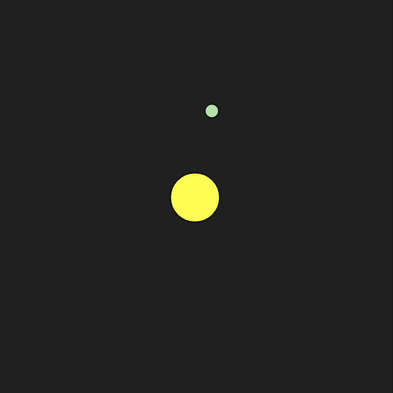
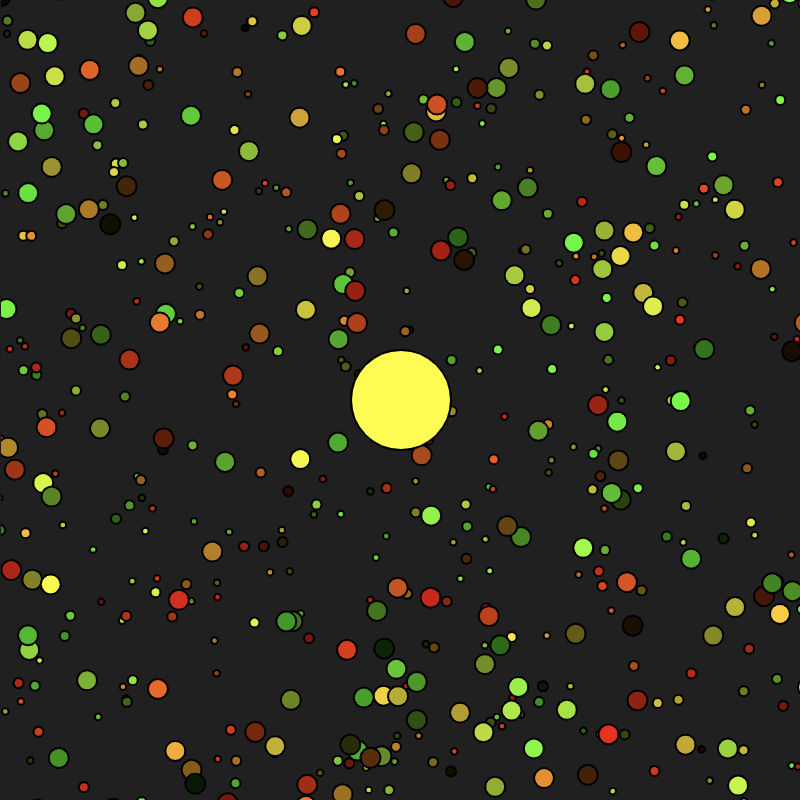
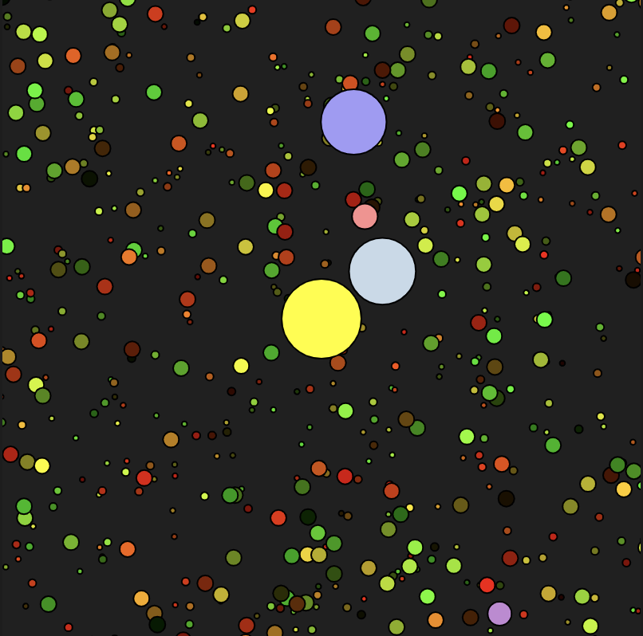

Week 7 » Activity 7
Interactive simulation
- create classes of entities to represent the components of the system
- use vectors to represent forces existing in the system
- use randomness or noise to generate at least one
- add direct or indirect mouse or keyboard controls

Step 1 was to find a demo that reflected a nature simulatoion. I found a demo where balls are attracted to your mouse cursor like a swarm of bees..

Step 2 was to find a demo that created a star pattern to represent the galaxy.

Step 3 was to combine the codes and remove the duplicate background draw functions.
Step 4 was to document my work on a html page and use CSS.